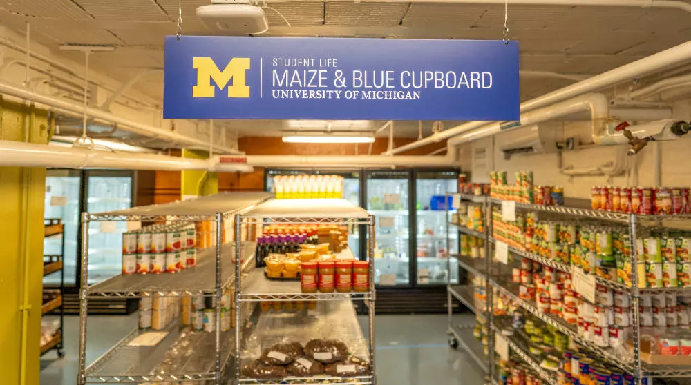
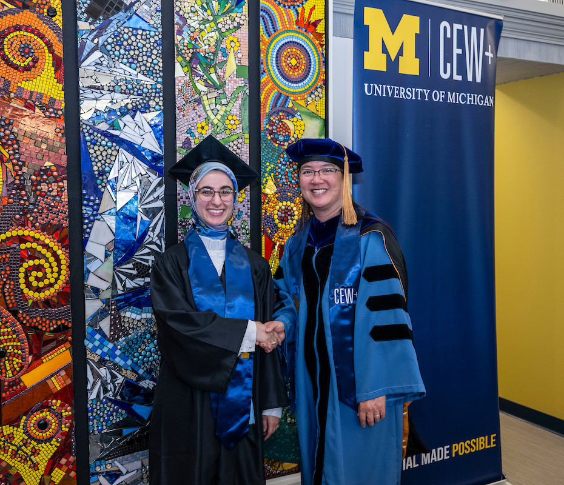
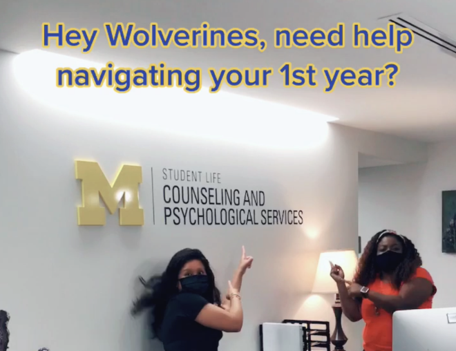
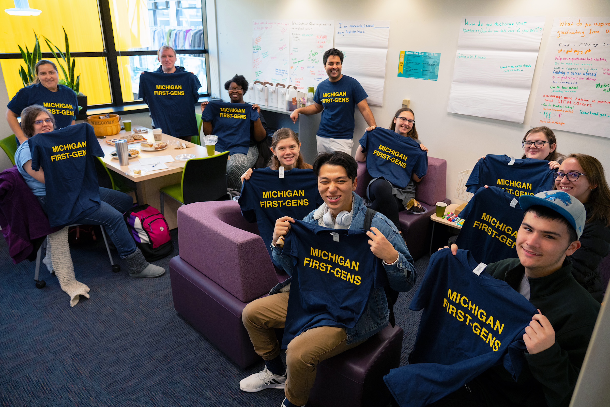
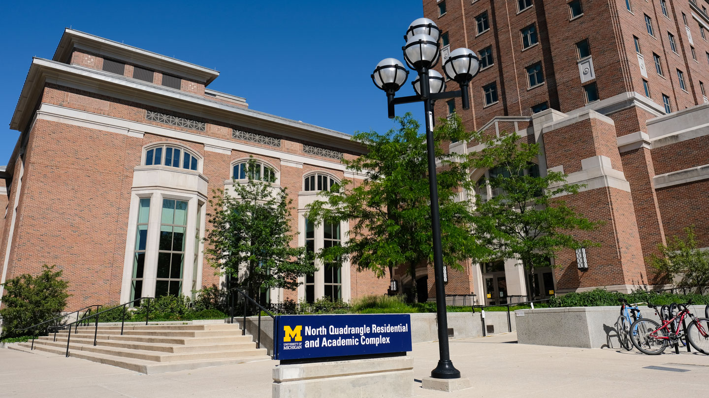

Welcome to the UMSI Student Resource Portal
Empowering Students with Resources for Academic and Personal Success.
Find what you need to excel academically, balance school and life, and access support in times of need.
Navigating life at the University of Michigan can feel overwhelming, but you're not alone. This guide is here to help you access the resources you need to thrive—whether you're finding housing, staying healthy, or studying for your next big exam. Let's make your journey as a Wolverine rewarding, balanced, and successful!
Home Portal

Food Pantry

CEW+

Caps
Study Spaces

First Gen

BSI Advising Resource

Tutoring
Student Life: Basic Needs
Featured Guides
-
Living in Ann Arbor
Explore a variety of options tailored to meet your needs.
Go to Living in Ann Arbor Guide -
Studying at UofM
Discover the best spots for focused and effective studying on campus.
Go to Studying at UofM Guide -
Thriving at Umich
Prioritize your well-being with health and counseling services.
Go to Thriving at Umich Guide
Upcoming Events
Stay updated with events designed to enhance your academic and social experience:
- January 21, 2025: Entrepreneurship & Innovation Pop-Up
- January 21, 2025: Business+Tech Datathon Information Session for UMSI Students
- January 22, 2025: Future of Work Panel on The Use of AI & UX
- January 22, 2025: BSI info session for U-M cross campus transfer students
- January 23, 2025: Master of Science in Information info session
- January 27, 2025: BSI info session for U-M cross campus transfer students
- January 29, 2025:UMSI Lunar New Year Celebration
- February 1, 2025: BSI Applications due for all cross-campus transfer students